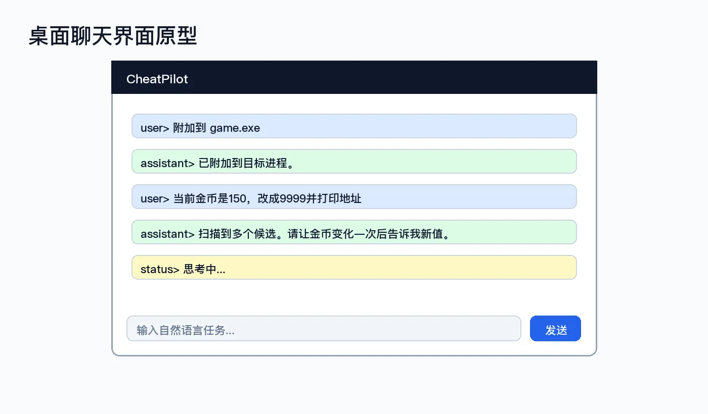
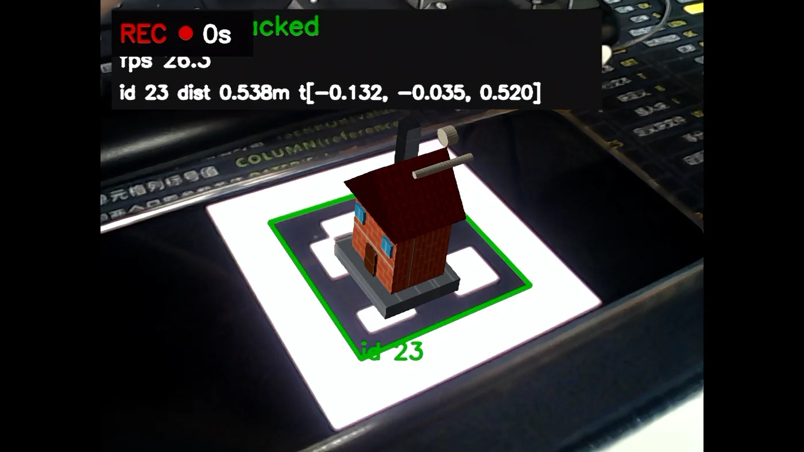
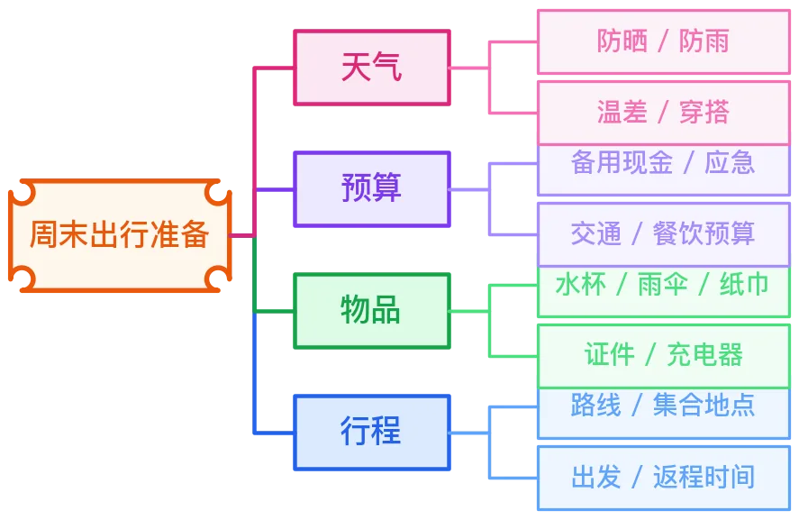

01
CheatPilot
用自然语言驱动真实内存操作的 LLM Agent。模型规划工具调用，由 Cheat Engine MCP 执行进程附加、扫描、筛选、写入与读回确认。
- Python
- LLM
- MCP
- FastAPI
Computer Science · Dalian
我是王斯民（CEJamesW），大连理工大学计算机科学方向开发者。关注 AI Agent 与开发工具、图形可视化，以及 CTF 安全实践。
01 / SELECTED WORK
从自然语言驱动的系统，到可交互的三维空间与面向实践的知识工具。

01
用自然语言驱动真实内存操作的 LLM Agent。模型规划工具调用，由 Cheat Engine MCP 执行进程附加、扫描、筛选、写入与读回确认。

02
OpenCV 负责 ArUco 检测与位姿估计，OpenGL 3.3 / GLSL 将纹理模型叠加到视频画面，并支持交互拾取与录像。

03
面向中文表达的结构化图示 Skill，由 JSON spec 驱动 SchemDraw，稳定生成 SVG/PNG，覆盖流程图、思维导图与技术示意图。
02 / FOCUS
如何让机器执行计划、让空间关系可见、让系统边界可被验证。
A
把模型能力接入真实工具链，关注可执行、可观察与可验证的交互闭环。
LLM · MCP · Codex Skills · Python
B
用实时渲染、视觉检测和空间交互，把抽象算法变成可探索的画面。
OpenGL · OpenCV · GLSL · C++
C
从题解、工具与知识整理出发，持续理解系统行为与安全边界。
Web · Reverse · Forensics · Writeups
03 / ABOUT
About CEJamesW
我是王斯民，在大连理工大学学习计算机科学。比起给自己贴上单一标签，我更喜欢在项目里连接不同领域：让 Agent 调用真实工具，让图形算法进入可交互空间，也把安全实践整理成可复用的知识。
这里收录的是仍在生长的工作。代码、说明文档和阶段性结果大多公开在 GitHub；如果你对其中某个方向感兴趣，欢迎从仓库或邮件开始交流。
04 / CONTACT